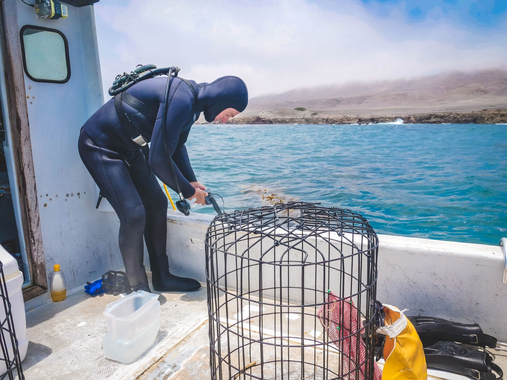

The crack that was cheaper in March
The ask. A harbour authority wanted a condition programme across a working quay — fourteen structures, walls, piles and an outfall — before committing a maintenance budget. Nothing was visibly wrong. That is exactly when inspection earns its money.
What we did. Six operational days at 6–18 m (1.6–2.8 bar), a four-person surface-supplied team, helmet CCTV and stills on every structure, ultrasonic thickness readings on the steel piles. The log ran to a written report per structure: what was sound, what was monitored, what was not.
The outcome. Two findings mattered: a fatigue crack at a weld toe on the main berth wall, and section loss on two piles past the point where coating alone would hold. Both were repaired inside the next planned maintenance window, with the port open and the berth working. The alternative — the crack announcing itself — would have been an emergency closure and a repair priced by urgency instead of by a rate card.

Log entry
- Client
- Harbour authority
- Depth
- 6–18 m
- Pressure
- 1.6–2.8 bar
- Team
- 4, surface-supplied
- Duration
- 6 days
- Deliverable
- Report, stills & thickness map per structure
“The inspection found the crack two budget cycles before it would have found us. We repaired fourteen metres of quay wall inside planned maintenance, at a planned price, with the port open. The report was written the way the invoice was: every figure checkable.”